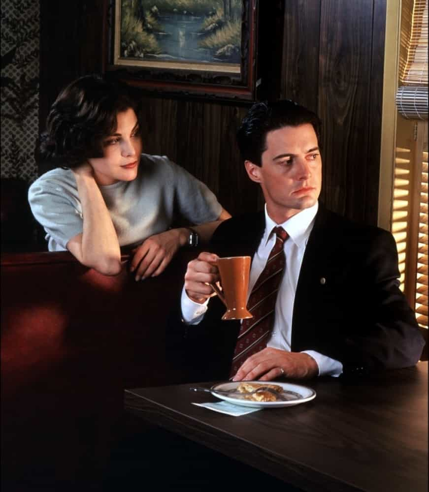

WC is just trying to get a nut like squirrels in this mad world. Land of milk and honey with the swirls, where reckless nekkid girls get necklaces of pearls. Follow me on twitter @WesternxCancer


One of my favorite types of girls is the bookish introvert. She’s usually mousey, waify, shy, and just a bit socially awkward. Sometimes she’ll look sad and other times she will look with wonderment out unto the world.
To me there are two types of introverted girls. The first is the internet attention whore who is shy and socially awkward. She will spend most of her time on tumblr accruing beta orbiters like there’s no tomorrow. The second type is the genuine introvert who might also be socially awkward, but prefers to live her life in the pages of a book. She still wants a man just like any other beautiful woman, but you have to approach her with the right mindset.
As I said before, introverted girls tend to stay inside all day reading books or surfing the web. However, for some reason I notice them alone during the day much more frequently than other girls who are found walking around with a BFF gossiping about the latest drama.
You’ll find introverted girls most frequently during the day time alone in thrift shops, book stores, art stores, grocery stores, and coffee shops. They’ll be walking around by themselves intently browsing book shelves or sipping a warm latte in a coffee shop.
Introverted girls can also be found online. Every girl wants companionship and intimacy, but it is hard to meet members of the opposite sex if one doesn’t put the required effort in. You can spot them most easily by their pictures. They will have a few selfies taken by their computer’s webcam. Darker or faded colors, bad quality pictures, neutral expressions, and cats are all tell tale signs of an introverted girl.
One bonus is that they usually don’t bother with myspace angles so your chances of meeting up with a secret internet fatty are slim. Introverted girls spend much of their time reading and listening to music so their profile will usually have a long list of various artists and authors they are in to. The ‘self summary’ section will be self-depreciating, “witty,” or pretty straight forward.
An indirect approach as described in Day Bang is the most successful route. Roosh talks about “scaring the cat” in Day Bang and introverted girls’ cats are extra sensitive so take care to have a very innocuous opener and a solid ramble. Make sure you keep an eye on their body language, introverted girls tend to be shy so she might not make lots of eye contact, but she could be doing something like facing you with her feet crossed to show interest. Try to keep it light, get her laughing, and grab her number. If she hasn’t excused herself and is keeping the conversation going, she is interested.
For whatever reason, I’ve found a lot of introverted girls don’t like to drink a whole lot. Maybe they’re scared they’ll “come out of their shell” or will do something people may judge them for. Pick somewhere that will let her relax, somewhere without a lot of people walking about, nothing with really loud music (unless you know she likes a particular style); get some ice cream and walk down to the beach. Do something low key and have a few venues which you can go. I usually do 2-3 venues meeting somewhere in the middle of where we both live and traveling closer to my apartment with each venue change. Eventually I’ll head back to my place to “watch an episode of that show” or show her something interesting. Comfort and rapport is key when it comes to seducing introverted girls.
It might be hard to get her talking at first, but there are a bunch of things all introverted girls seem to like. They usually like “hipster/indie” music so check out Pitchfork for some trendy bands. For some reason all introverted girls like Wes Anderson movies, the X-files, and independent films. Twin Peaks, Amelie, Monty Python, Eternal Sunshine of the Spotless Mind etc. all seem to come up a lot as well. Introverted girls like post-modern literature such as Kurt Vonnegut or Joseph Heller (Catch 22). They also enjoy Haruki Murakami and The Hitchhiker’s Guide to The Galaxy. Food and alcohol is another large talking point. Find something she likes and get her to open up about it.
And remember, always ask her “why” if she mentions a particular book or movie.
 Coffee and pie anyone?Introverted girls, like other girls, just want to be fucked by a confident and dominant man. Shyness will be a huge hurdle, but you need to focus on escalating at the right pace. For example I once took an introverted girl to a food truck near my place, we grabbed some ice cream after, but spent most of our time talking. In under an hour I had her back to my place to watch a TV show and she still wouldn’t talk much or even look me in the eye. Fifteen minutes into the show I felt like I had to do something. Since she had followed my every move and was sitting on my bed, I knew she was interested so I made my move. I turned her head towards mine and kissed her. Shortly after we were having sex.
An introverted girl’s body language might throw you off and make you think she’s not interested, but if shes complying with any tests you give her, playfully hitting you, or back at your place, you can know for sure there’s enough attraction and comfort to start kissing her.
One thing you should not do is assume she is an innocent nice girl who has never had sex. Don’t try to psych yourself out saying “she won’t have sex with me quickly, she’s too shy.” Introverted girls are just like any other girl, yes some do require a lot more comfort than others, but most of the time it is just easy enough to lead the interaction towards sex. If she is uncomfortable she will tell you so by saying “you’re moving too fast” or “I don’t even really know you”
Introverted girls make for great casual girlfriends. You can see them once a week and do low key activities like watching movies, seeing a band, or going on walks. There is a great upside in that you don’t really have to run over the top asshole game like you would on many girls you meet at night. Being an interesting, non-needy, and confident man is sometimes all it takes to seduce these women. Don’t mistake their shyness for disinterest and make sure you’re knowledgeable on the common artists they enjoy.
Read Also: 4 Tips For Men Who Are Natural Introverts
{kind=link}
{kind=link}